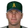
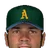
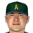
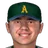
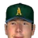
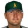
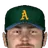

Franchise record book · FBL
Alaska Athletics
Seasons covered: 2002–2002. Only games played for this franchise count.
This club has no pre-2002 history in the export, so its record book is the 2002 season to date. Rate records need 3.1 PA or 1 inning per team game.
Home runs
| # | Player | Season | Team | Home runs |
|---|---|---|---|---|
| #1 | 2002 (FBL) |  Alaska Athletics Alaska Athletics | 6 | |
| #2 |  Casey Blake • | 2002 (FBL) | Alaska Athletics | 5 |
| #3 | 2002 (FBL) | Alaska Athletics | 4 | |
| #4 | 2002 (FBL) | Alaska Athletics | 3 | |
| #5 |  Jody Gerut • | 2002 (FBL) | Alaska Athletics | 3 |
| #6 | 2002 (FBL) | Alaska Athletics | 2 | |
| #7 | 2002 (FBL) | Alaska Athletics | 1 | |
| #8 | Dave Hansen • | 2002 (FBL) | Alaska Athletics | 1 |
| #9 | 2002 (FBL) | Alaska Athletics | 1 | |
| #10 | Robby Hammock • | 2002 (FBL) | Alaska Athletics | 1 |
Hits
| # | Player | Season | Team | Hits |
|---|---|---|---|---|
| #1 | Jody Gerut • | 2002 (FBL) | Alaska Athletics | 43 |
| #2 | 2002 (FBL) | Alaska Athletics | 43 | |
| #3 | Casey Blake • | 2002 (FBL) | Alaska Athletics | 42 |
| #4 | 2002 (FBL) | Alaska Athletics | 42 | |
| #5 | 2002 (FBL) | Alaska Athletics | 31 | |
| #6 | Dave Hansen • | 2002 (FBL) | Alaska Athletics | 30 |
| #7 | 2002 (FBL) | Alaska Athletics | 28 | |
| #8 | 2002 (FBL) | Alaska Athletics | 27 | |
| #9 | 2002 (FBL) | Alaska Athletics | 24 | |
| #10 |  Warren Morris • | 2002 (FBL) | Alaska Athletics | 13 |
RBI
| # | Player | Season | Team | RBI |
|---|---|---|---|---|
| #1 | 2002 (FBL) | Alaska Athletics | 22 | |
| #2 | Jody Gerut • | 2002 (FBL) | Alaska Athletics | 18 |
| #3 | 2002 (FBL) | Alaska Athletics | 16 | |
| #4 | 2002 (FBL) | Alaska Athletics | 16 | |
| #5 | 2002 (FBL) | Alaska Athletics | 16 | |
| #6 | 2002 (FBL) | Alaska Athletics | 14 | |
| #7 | Dave Hansen • | 2002 (FBL) | Alaska Athletics | 11 |
| #8 | Casey Blake • | 2002 (FBL) | Alaska Athletics | 10 |
| #9 | Robby Hammock • | 2002 (FBL) | Alaska Athletics | 8 |
| #10 | 2002 (FBL) | Alaska Athletics | 7 |
Runs
| # | Player | Season | Team | Runs |
|---|---|---|---|---|
| #1 | 2002 (FBL) | Alaska Athletics | 25 | |
| #2 | Casey Blake • | 2002 (FBL) | Alaska Athletics | 21 |
| #3 | 2002 (FBL) | Alaska Athletics | 16 | |
| #4 | 2002 (FBL) | Alaska Athletics | 13 | |
| #5 | 2002 (FBL) | Alaska Athletics | 13 | |
| #6 | Dave Hansen • | 2002 (FBL) | Alaska Athletics | 13 |
| #7 | Jody Gerut • | 2002 (FBL) | Alaska Athletics | 13 |
| #8 | 2002 (FBL) | Alaska Athletics | 11 | |
| #9 | 2002 (FBL) | Alaska Athletics | 7 | |
| #10 | Robby Hammock • | 2002 (FBL) | Alaska Athletics | 7 |
Stolen bases
| # | Player | Season | Team | Stolen bases |
|---|---|---|---|---|
| #1 | 2002 (FBL) | Alaska Athletics | 11 | |
| #2 | Casey Blake • | 2002 (FBL) | Alaska Athletics | 6 |
| #3 | 2002 (FBL) | Alaska Athletics | 5 | |
| #4 | 2002 (FBL) | Alaska Athletics | 5 | |
| #5 | Jody Gerut • | 2002 (FBL) | Alaska Athletics | 3 |
| #6 | 2002 (FBL) | Alaska Athletics | 2 | |
| #7 | Robby Hammock • | 2002 (FBL) | Alaska Athletics | 1 |
| #8 | 2002 (FBL) | Alaska Athletics | 0 | |
| #9 | Dave Hansen • | 2002 (FBL) | Alaska Athletics | 0 |
| #10 | 2002 (FBL) | Alaska Athletics | 0 |
Doubles
| # | Player | Season | Team | Doubles |
|---|---|---|---|---|
| #1 | Jody Gerut • | 2002 (FBL) | Alaska Athletics | 9 |
| #2 | 2002 (FBL) | Alaska Athletics | 8 | |
| #3 | 2002 (FBL) | Alaska Athletics | 7 | |
| #4 | 2002 (FBL) | Alaska Athletics | 5 | |
| #5 | Casey Blake • | 2002 (FBL) | Alaska Athletics | 5 |
| #6 | 2002 (FBL) | Alaska Athletics | 5 | |
| #7 | Warren Morris • | 2002 (FBL) | Alaska Athletics | 5 |
| #8 | Dave Hansen • | 2002 (FBL) | Alaska Athletics | 3 |
| #9 | 2002 (FBL) | Alaska Athletics | 3 | |
| #10 | 2002 (FBL) | Alaska Athletics | 1 |
Triples
| # | Player | Season | Team | Triples |
|---|---|---|---|---|
| #1 | Casey Blake • | 2002 (FBL) | Alaska Athletics | 2 |
| #2 | 2002 (FBL) | Alaska Athletics | 2 | |
| #3 | 2002 (FBL) | Alaska Athletics | 1 | |
| #4 | 2002 (FBL) | Alaska Athletics | 1 | |
| #5 | Dave Hansen • | 2002 (FBL) | Alaska Athletics | 1 |
| #6 | 2002 (FBL) | Alaska Athletics | 1 | |
| #7 | 2002 (FBL) | Alaska Athletics | 0 | |
| #8 | 2002 (FBL) | Alaska Athletics | 0 | |
| #9 | Warren Morris • | 2002 (FBL) | Alaska Athletics | 0 |
| #10 | 2002 (FBL) | Alaska Athletics | 0 |
Walks
| # | Player | Season | Team | Walks |
|---|---|---|---|---|
| #1 | Dave Hansen • | 2002 (FBL) | Alaska Athletics | 19 |
| #2 | 2002 (FBL) | Alaska Athletics | 18 | |
| #3 | Casey Blake • | 2002 (FBL) | Alaska Athletics | 16 |
| #4 | 2002 (FBL) | Alaska Athletics | 15 | |
| #5 | 2002 (FBL) | Alaska Athletics | 11 | |
| #6 | 2002 (FBL) | Alaska Athletics | 10 | |
| #7 | Jody Gerut • | 2002 (FBL) | Alaska Athletics | 10 |
| #8 | 2002 (FBL) | Alaska Athletics | 7 | |
| #9 | Robby Hammock • | 2002 (FBL) | Alaska Athletics | 6 |
| #10 | Warren Morris • | 2002 (FBL) | Alaska Athletics | 5 |
Total bases
| # | Player | Season | Team | Total bases |
|---|---|---|---|---|
| #1 | Casey Blake • | 2002 (FBL) | Alaska Athletics | 66 |
| #2 | 2002 (FBL) | Alaska Athletics | 66 | |
| #3 | Jody Gerut • | 2002 (FBL) | Alaska Athletics | 61 |
| #4 | 2002 (FBL) | Alaska Athletics | 55 | |
| #5 | 2002 (FBL) | Alaska Athletics | 48 | |
| #6 | 2002 (FBL) | Alaska Athletics | 46 | |
| #7 | Dave Hansen • | 2002 (FBL) | Alaska Athletics | 38 |
| #8 | 2002 (FBL) | Alaska Athletics | 36 | |
| #9 | 2002 (FBL) | Alaska Athletics | 34 | |
| #10 | Warren Morris • | 2002 (FBL) | Alaska Athletics | 18 |
Batting average qualified
| # | Player | Season | Team | Batting average |
|---|---|---|---|---|
| #1 | 2002 (FBL) | Alaska Athletics | .312 | |
| #2 | 2002 (FBL) | Alaska Athletics | .300 | |
| #3 | Casey Blake • | 2002 (FBL) | Alaska Athletics | .280 |
| #4 | Jody Gerut • | 2002 (FBL) | Alaska Athletics | .276 |
| #5 | 2002 (FBL) | Alaska Athletics | .237 | |
| #6 | Dave Hansen • | 2002 (FBL) | Alaska Athletics | .231 |
| #7 | 2002 (FBL) | Alaska Athletics | .230 | |
| #8 | 2002 (FBL) | Alaska Athletics | .219 | |
| #9 | 2002 (FBL) | Alaska Athletics | .194 |
On-base % qualified
| # | Player | Season | Team | On-base % |
|---|---|---|---|---|
| #1 | 2002 (FBL) | Alaska Athletics | .387 | |
| #2 | 2002 (FBL) | Alaska Athletics | .379 | |
| #3 | Casey Blake • | 2002 (FBL) | Alaska Athletics | .365 |
| #4 | 2002 (FBL) | Alaska Athletics | .346 | |
| #5 | Dave Hansen • | 2002 (FBL) | Alaska Athletics | .325 |
| #6 | Jody Gerut • | 2002 (FBL) | Alaska Athletics | .317 |
| #7 | 2002 (FBL) | Alaska Athletics | .291 | |
| #8 | 2002 (FBL) | Alaska Athletics | .248 | |
| #9 | 2002 (FBL) | Alaska Athletics | .233 |
Slugging % qualified
| # | Player | Season | Team | Slugging % |
|---|---|---|---|---|
| #1 | 2002 (FBL) | Alaska Athletics | .478 | |
| #2 | Casey Blake • | 2002 (FBL) | Alaska Athletics | .440 |
| #3 | 2002 (FBL) | Alaska Athletics | .404 | |
| #4 | 2002 (FBL) | Alaska Athletics | .393 | |
| #5 | Jody Gerut • | 2002 (FBL) | Alaska Athletics | .391 |
| #6 | 2002 (FBL) | Alaska Athletics | .356 | |
| #7 | Dave Hansen • | 2002 (FBL) | Alaska Athletics | .292 |
| #8 | 2002 (FBL) | Alaska Athletics | .290 | |
| #9 | 2002 (FBL) | Alaska Athletics | .266 |
OPS qualified
| # | Player | Season | Team | OPS |
|---|---|---|---|---|
| #1 | 2002 (FBL) | Alaska Athletics | .857 | |
| #2 | Casey Blake • | 2002 (FBL) | Alaska Athletics | .805 |
| #3 | 2002 (FBL) | Alaska Athletics | .779 | |
| #4 | 2002 (FBL) | Alaska Athletics | .749 | |
| #5 | Jody Gerut • | 2002 (FBL) | Alaska Athletics | .708 |
| #6 | 2002 (FBL) | Alaska Athletics | .646 | |
| #7 | Dave Hansen • | 2002 (FBL) | Alaska Athletics | .617 |
| #8 | 2002 (FBL) | Alaska Athletics | .538 | |
| #9 | 2002 (FBL) | Alaska Athletics | .499 |
WAR (OOTP)
| # | Player | Season | Team | WAR (OOTP) |
|---|---|---|---|---|
| #1 | 2002 (FBL) | Alaska Athletics | 1.0 | |
| #2 | 2002 (FBL) | Alaska Athletics | 0.5 | |
| #3 | 2002 (FBL) | Alaska Athletics | 0.3 | |
| #4 | 2002 (FBL) | Alaska Athletics | 0.2 | |
| #5 | Warren Morris • | 2002 (FBL) | Alaska Athletics | 0.2 |
| #6 | 2002 (FBL) | Alaska Athletics | 0.1 | |
| #7 | Casey Blake • | 2002 (FBL) | Alaska Athletics | 0.1 |
| #8 | 2002 (FBL) | Alaska Athletics | 0.0 | |
| #9 | 2002 (FBL) | Alaska Athletics | 0.0 | |
| #10 | Robby Hammock • | 2002 (FBL) | Alaska Athletics | 0.0 |
Wins
| # | Player | Season | Team | Wins |
|---|---|---|---|---|
| #1 | 2002 (FBL) | Alaska Athletics | 4 | |
| #2 | 2002 (FBL) | Alaska Athletics | 4 | |
| #3 | 2002 (FBL) | Alaska Athletics | 3 | |
| #4 |  Ryan Jensen • | 2002 (FBL) | Alaska Athletics | 2 |
| #5 |  Jamie Walker • | 2002 (FBL) | Alaska Athletics | 2 |
| #6 | 2002 (FBL) | Alaska Athletics | 1 | |
| #7 | 2002 (FBL) | Alaska Athletics | 1 | |
| #8 | Shane Nance • | 2002 (FBL) | Alaska Athletics | 1 |
| #9 | Derek Lee • | 2002 (FBL) | Alaska Athletics | 1 |
| #10 | 2002 (FBL) | Alaska Athletics | 1 |
Strikeouts
| # | Player | Season | Team | Strikeouts |
|---|---|---|---|---|
| #1 | 2002 (FBL) | Alaska Athletics | 52 | |
| #2 | 2002 (FBL) | Alaska Athletics | 37 | |
| #3 | 2002 (FBL) | Alaska Athletics | 33 | |
| #4 | 2002 (FBL) | Alaska Athletics | 28 | |
| #5 | Ryan Jensen • | 2002 (FBL) | Alaska Athletics | 23 |
| #6 | Jamie Walker • | 2002 (FBL) | Alaska Athletics | 12 |
| #7 | 2002 (FBL) | Alaska Athletics | 11 | |
| #8 | Shane Nance • | 2002 (FBL) | Alaska Athletics | 10 |
| #9 | Derek Lee • | 2002 (FBL) | Alaska Athletics | 10 |
| #10 |  Todd Williams • | 2002 (FBL) | Alaska Athletics | 8 |
Saves
| # | Player | Season | Team | Saves |
|---|---|---|---|---|
| #1 | 2002 (FBL) | Alaska Athletics | 10 | |
| #2 |  Danny Kolb • | 2002 (FBL) | Alaska Athletics | 4 |
| #3 | Jamie Walker • | 2002 (FBL) | Alaska Athletics | 2 |
| #4 | Shane Nance • | 2002 (FBL) | Alaska Athletics | 1 |
| #5 | Derek Lee • | 2002 (FBL) | Alaska Athletics | 1 |
| #6 | 2002 (FBL) | Alaska Athletics | 0 | |
| #7 | 2002 (FBL) | Alaska Athletics | 0 | |
| #8 | 2002 (FBL) | Alaska Athletics | 0 | |
| #9 | 2002 (FBL) | Alaska Athletics | 0 | |
| #10 | Ryan Jensen • | 2002 (FBL) | Alaska Athletics | 0 |
Innings
| # | Player | Season | Team | Innings |
|---|---|---|---|---|
| #1 | 2002 (FBL) | Alaska Athletics | 68.2 | |
| #2 | 2002 (FBL) | Alaska Athletics | 56.0 | |
| #3 | 2002 (FBL) | Alaska Athletics | 55.1 | |
| #4 | 2002 (FBL) | Alaska Athletics | 41.1 | |
| #5 | Ryan Jensen • | 2002 (FBL) | Alaska Athletics | 37.0 |
| #6 | Shane Nance • | 2002 (FBL) | Alaska Athletics | 18.1 |
| #7 | Derek Lee • | 2002 (FBL) | Alaska Athletics | 15.1 |
| #8 | 2002 (FBL) | Alaska Athletics | 14.1 | |
| #9 | Jamie Walker • | 2002 (FBL) | Alaska Athletics | 13.2 |
| #10 | Danny Kolb • | 2002 (FBL) | Alaska Athletics | 12.2 |
Complete games
| # | Player | Season | Team | Complete games |
|---|---|---|---|---|
| #1 | 2002 (FBL) | Alaska Athletics | 1 | |
| #2 | 2002 (FBL) | Alaska Athletics | 0 | |
| #3 | 2002 (FBL) | Alaska Athletics | 0 | |
| #4 | 2002 (FBL) | Alaska Athletics | 0 | |
| #5 | 2002 (FBL) | Alaska Athletics | 0 | |
| #6 | Shane Nance • | 2002 (FBL) | Alaska Athletics | 0 |
| #7 | Ryan Jensen • | 2002 (FBL) | Alaska Athletics | 0 |
| #8 | Danny Kolb • | 2002 (FBL) | Alaska Athletics | 0 |
| #9 | Jamie Walker • | 2002 (FBL) | Alaska Athletics | 0 |
| #10 | Todd Williams • | 2002 (FBL) | Alaska Athletics | 0 |
Shutouts
| # | Player | Season | Team | Shutouts |
|---|---|---|---|---|
| #1 | 2002 (FBL) | Alaska Athletics | 1 | |
| #2 | 2002 (FBL) | Alaska Athletics | 0 | |
| #3 | 2002 (FBL) | Alaska Athletics | 0 | |
| #4 | 2002 (FBL) | Alaska Athletics | 0 | |
| #5 | 2002 (FBL) | Alaska Athletics | 0 | |
| #6 | Shane Nance • | 2002 (FBL) | Alaska Athletics | 0 |
| #7 | Ryan Jensen • | 2002 (FBL) | Alaska Athletics | 0 |
| #8 | Danny Kolb • | 2002 (FBL) | Alaska Athletics | 0 |
| #9 | Jamie Walker • | 2002 (FBL) | Alaska Athletics | 0 |
| #10 | Todd Williams • | 2002 (FBL) | Alaska Athletics | 0 |
ERA qualified
| # | Player | Season | Team | ERA |
|---|---|---|---|---|
| #1 | 2002 (FBL) | Alaska Athletics | 1.83 | |
| #2 | 2002 (FBL) | Alaska Athletics | 2.11 | |
| #3 | 2002 (FBL) | Alaska Athletics | 4.82 | |
| #4 | 2002 (FBL) | Alaska Athletics | 5.44 |
WHIP qualified
| # | Player | Season | Team | WHIP |
|---|---|---|---|---|
| #1 | 2002 (FBL) | Alaska Athletics | 1.02 | |
| #2 | 2002 (FBL) | Alaska Athletics | 1.25 | |
| #3 | 2002 (FBL) | Alaska Athletics | 1.39 | |
| #4 | 2002 (FBL) | Alaska Athletics | 1.57 |
K/9 qualified
| # | Player | Season | Team | K/9 |
|---|---|---|---|---|
| #1 | 2002 (FBL) | Alaska Athletics | 7.2 | |
| #2 | 2002 (FBL) | Alaska Athletics | 6.8 | |
| #3 | 2002 (FBL) | Alaska Athletics | 5.9 | |
| #4 | 2002 (FBL) | Alaska Athletics | 4.6 |
WAR (OOTP)
| # | Player | Season | Team | WAR (OOTP) |
|---|---|---|---|---|
| #1 | 2002 (FBL) | Alaska Athletics | 1.7 | |
| #2 | 2002 (FBL) | Alaska Athletics | 1.5 | |
| #3 | 2002 (FBL) | Alaska Athletics | 0.8 | |
| #4 | Ryan Jensen • | 2002 (FBL) | Alaska Athletics | 0.5 |
| #5 | Todd Williams • | 2002 (FBL) | Alaska Athletics | 0.4 |
| #6 | 2002 (FBL) | Alaska Athletics | 0.3 | |
| #7 | Shane Nance • | 2002 (FBL) | Alaska Athletics | 0.2 |
| #8 | 2002 (FBL) | Alaska Athletics | 0.2 | |
| #9 | Danny Kolb • | 2002 (FBL) | Alaska Athletics | 0.1 |
| #10 | Derek Lee • | 2002 (FBL) | Alaska Athletics | -0.1 |
Home runs
| # | Player | Years | Home runs |
|---|---|---|---|
| #1 | 2002–02 | 6 | |
| #2 | Casey Blake • | 1999–02 | 5 |
| #3 | 1992–02 | 4 | |
| #4 | 1998–02 | 3 | |
| #5 | Jody Gerut • | 2002–02 | 3 |
| #6 | 2001–02 | 2 | |
| #7 | 1999–02 | 1 | |
| #8 | Dave Hansen • | 1990–02 | 1 |
| #9 | 1989–02 | 1 | |
| #10 | Robby Hammock • | 2002–02 | 1 |
Hits
| # | Player | Years | Hits |
|---|---|---|---|
| #1 | Jody Gerut • | 2002–02 | 43 |
| #2 | 2002–02 | 43 | |
| #3 | Casey Blake • | 1999–02 | 42 |
| #4 | 2001–02 | 42 | |
| #5 | 1998–02 | 31 | |
| #6 | Dave Hansen • | 1990–02 | 30 |
| #7 | 1989–02 | 28 | |
| #8 | 1992–02 | 27 | |
| #9 | 1999–02 | 24 | |
| #10 | Warren Morris • | 1999–02 | 13 |
RBI
| # | Player | Years | RBI |
|---|---|---|---|
| #1 | 2002–02 | 22 | |
| #2 | Jody Gerut • | 2002–02 | 18 |
| #3 | 1992–02 | 16 | |
| #4 | 2001–02 | 16 | |
| #5 | 1989–02 | 16 | |
| #6 | 1998–02 | 14 | |
| #7 | Dave Hansen • | 1990–02 | 11 |
| #8 | Casey Blake • | 1999–02 | 10 |
| #9 | Robby Hammock • | 2002–02 | 8 |
| #10 | 1999–02 | 7 |
Runs
| # | Player | Years | Runs |
|---|---|---|---|
| #1 | 2002–02 | 25 | |
| #2 | Casey Blake • | 1999–02 | 21 |
| #3 | 2001–02 | 16 | |
| #4 | 1998–02 | 13 | |
| #5 | 1992–02 | 13 | |
| #6 | Dave Hansen • | 1990–02 | 13 |
| #7 | Jody Gerut • | 2002–02 | 13 |
| #8 | 1999–02 | 11 | |
| #9 | 1989–02 | 7 | |
| #10 | Robby Hammock • | 2002–02 | 7 |
Stolen bases
| # | Player | Years | Stolen bases |
|---|---|---|---|
| #1 | 2002–02 | 11 | |
| #2 | Casey Blake • | 1999–02 | 6 |
| #3 | 1998–02 | 5 | |
| #4 | 2001–02 | 5 | |
| #5 | Jody Gerut • | 2002–02 | 3 |
| #6 | 1999–02 | 2 | |
| #7 | Robby Hammock • | 2002–02 | 1 |
| #8 | 1992–02 | 0 | |
| #9 | Dave Hansen • | 1990–02 | 0 |
| #10 | 1998–02 | 0 |
Doubles
| # | Player | Years | Doubles |
|---|---|---|---|
| #1 | Jody Gerut • | 2002–02 | 9 |
| #2 | 1998–02 | 8 | |
| #3 | 1999–02 | 7 | |
| #4 | 1992–02 | 5 | |
| #5 | Casey Blake • | 1999–02 | 5 |
| #6 | 2001–02 | 5 | |
| #7 | Warren Morris • | 1999–02 | 5 |
| #8 | Dave Hansen • | 1990–02 | 3 |
| #9 | 1989–02 | 3 | |
| #10 | 2002–02 | 1 |
Triples
| # | Player | Years | Triples |
|---|---|---|---|
| #1 | Casey Blake • | 1999–02 | 2 |
| #2 | 2002–02 | 2 | |
| #3 | 1999–02 | 1 | |
| #4 | 1992–02 | 1 | |
| #5 | Dave Hansen • | 1990–02 | 1 |
| #6 | 2001–02 | 1 | |
| #7 | 1998–02 | 0 | |
| #8 | 1998–02 | 0 | |
| #9 | Warren Morris • | 1999–02 | 0 |
| #10 | 1989–02 | 0 |
Walks
| # | Player | Years | Walks |
|---|---|---|---|
| #1 | Dave Hansen • | 1990–02 | 19 |
| #2 | 2001–02 | 18 | |
| #3 | Casey Blake • | 1999–02 | 16 |
| #4 | 1992–02 | 15 | |
| #5 | 2002–02 | 11 | |
| #6 | 1998–02 | 10 | |
| #7 | Jody Gerut • | 2002–02 | 10 |
| #8 | 1999–02 | 7 | |
| #9 | Robby Hammock • | 2002–02 | 6 |
| #10 | Warren Morris • | 1999–02 | 5 |
Total bases
| # | Player | Years | Total bases |
|---|---|---|---|
| #1 | Casey Blake • | 1999–02 | 66 |
| #2 | 2002–02 | 66 | |
| #3 | Jody Gerut • | 2002–02 | 61 |
| #4 | 2001–02 | 55 | |
| #5 | 1998–02 | 48 | |
| #6 | 1992–02 | 46 | |
| #7 | Dave Hansen • | 1990–02 | 38 |
| #8 | 1999–02 | 36 | |
| #9 | 1989–02 | 34 | |
| #10 | Warren Morris • | 1999–02 | 18 |
Batting average min 2,000 PA
| # | Player | Years | Batting average |
|---|
On-base % min 2,000 PA
| # | Player | Years | On-base % |
|---|
Slugging % min 2,000 PA
| # | Player | Years | Slugging % |
|---|
OPS min 2,000 PA
| # | Player | Years | OPS |
|---|
WAR (OOTP)
| # | Player | Years | WAR (OOTP) |
|---|---|---|---|
| #1 | 2002–02 | 1.0 | |
| #2 | 2001–02 | 0.5 | |
| #3 | 1992–02 | 0.3 | |
| #4 | 1998–02 | 0.2 | |
| #5 | Warren Morris • | 1999–02 | 0.2 |
| #6 | 2002–02 | 0.1 | |
| #7 | Casey Blake • | 1999–02 | 0.1 |
| #8 | 2002–02 | 0.0 | |
| #9 | 1998–02 | 0.0 | |
| #10 | Robby Hammock • | 2002–02 | 0.0 |
Wins
| # | Player | Years | Wins |
|---|---|---|---|
| #1 | 1997–02 | 4 | |
| #2 | 1995–02 | 4 | |
| #3 | 1997–02 | 3 | |
| #4 | Ryan Jensen • | 2001–02 | 2 |
| #5 | Jamie Walker • | 1997–02 | 2 |
| #6 | 1991–02 | 1 | |
| #7 | 1989–02 | 1 | |
| #8 | Shane Nance • | 2002–02 | 1 |
| #9 | Derek Lee • | 2002–02 | 1 |
| #10 | 2002–02 | 1 |
Strikeouts
| # | Player | Years | Strikeouts |
|---|---|---|---|
| #1 | 1997–02 | 52 | |
| #2 | 1989–02 | 37 | |
| #3 | 1997–02 | 33 | |
| #4 | 1995–02 | 28 | |
| #5 | Ryan Jensen • | 2001–02 | 23 |
| #6 | Jamie Walker • | 1997–02 | 12 |
| #7 | 1991–02 | 11 | |
| #8 | Shane Nance • | 2002–02 | 10 |
| #9 | Derek Lee • | 2002–02 | 10 |
| #10 | Todd Williams • | 1995–02 | 8 |
Saves
| # | Player | Years | Saves |
|---|---|---|---|
| #1 | 1991–02 | 10 | |
| #2 | Danny Kolb • | 1999–02 | 4 |
| #3 | Jamie Walker • | 1997–02 | 2 |
| #4 | Shane Nance • | 2002–02 | 1 |
| #5 | Derek Lee • | 2002–02 | 1 |
| #6 | 1997–02 | 0 | |
| #7 | 1995–02 | 0 | |
| #8 | 1989–02 | 0 | |
| #9 | 1997–02 | 0 | |
| #10 | Ryan Jensen • | 2001–02 | 0 |
Innings
| # | Player | Years | Innings |
|---|---|---|---|
| #1 | 1997–02 | 68.2 | |
| #2 | 1989–02 | 56.0 | |
| #3 | 1995–02 | 55.1 | |
| #4 | 1997–02 | 41.1 | |
| #5 | Ryan Jensen • | 2001–02 | 37.0 |
| #6 | Shane Nance • | 2002–02 | 18.1 |
| #7 | Derek Lee • | 2002–02 | 15.1 |
| #8 | 1991–02 | 14.1 | |
| #9 | Jamie Walker • | 1997–02 | 13.2 |
| #10 | Danny Kolb • | 1999–02 | 12.2 |
Complete games
| # | Player | Years | Complete games |
|---|---|---|---|
| #1 | 1997–02 | 1 | |
| #2 | 1995–02 | 0 | |
| #3 | 1991–02 | 0 | |
| #4 | 1989–02 | 0 | |
| #5 | 1997–02 | 0 | |
| #6 | Shane Nance • | 2002–02 | 0 |
| #7 | Ryan Jensen • | 2001–02 | 0 |
| #8 | Danny Kolb • | 1999–02 | 0 |
| #9 | Jamie Walker • | 1997–02 | 0 |
| #10 | Todd Williams • | 1995–02 | 0 |
Shutouts
| # | Player | Years | Shutouts |
|---|---|---|---|
| #1 | 1997–02 | 1 | |
| #2 | 1995–02 | 0 | |
| #3 | 1991–02 | 0 | |
| #4 | 1989–02 | 0 | |
| #5 | 1997–02 | 0 | |
| #6 | Shane Nance • | 2002–02 | 0 |
| #7 | Ryan Jensen • | 2001–02 | 0 |
| #8 | Danny Kolb • | 1999–02 | 0 |
| #9 | Jamie Walker • | 1997–02 | 0 |
| #10 | Todd Williams • | 1995–02 | 0 |
ERA min 500 IP
| # | Player | Years | ERA |
|---|
WHIP min 500 IP
| # | Player | Years | WHIP |
|---|
K/9 min 500 IP
| # | Player | Years | K/9 |
|---|
WAR (OOTP)
| # | Player | Years | WAR (OOTP) |
|---|---|---|---|
| #1 | 1997–02 | 1.7 | |
| #2 | 1995–02 | 1.5 | |
| #3 | 1989–02 | 0.8 | |
| #4 | Ryan Jensen • | 2001–02 | 0.5 |
| #5 | Todd Williams • | 1995–02 | 0.4 |
| #6 | 1991–02 | 0.3 | |
| #7 | Shane Nance • | 2002–02 | 0.2 |
| #8 | 1997–02 | 0.2 | |
| #9 | Danny Kolb • | 1999–02 | 0.1 |
| #10 | Derek Lee • | 2002–02 | -0.1 |